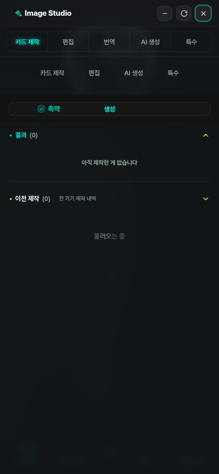
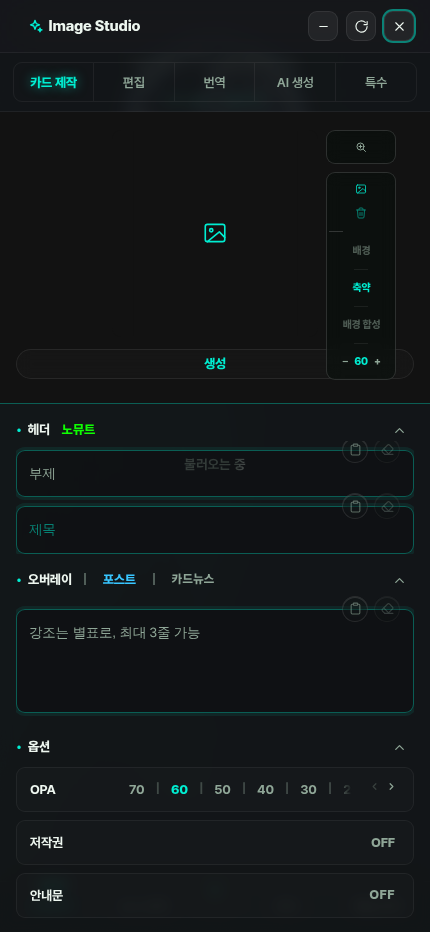
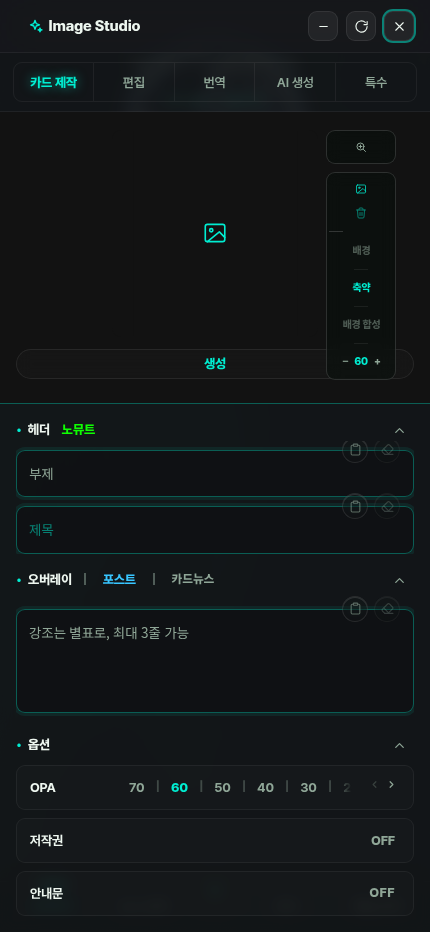

openTool만 호출).
운영자 첨부1은 버그 화면이 아니라 「아직 완성되지 않은 화면을 부모가 먼저 보여준 것」이다. 원인은 두 타이밍이 어긋난 레이스 하나다.
| 축 | 거는 곳 | 실측 시각(클릭=0) |
|---|---|---|
프레임 노출(.ready = opacity 0→1) | frEarly — 자식 문서에 뭐라도 그려지면 즉시 | 527ms |
부모 주입(thumbTabBridge = 내부 #tabs 숨김 + .panel −18) | bindToolFrameLoad — iframe load(마지막 하위 리소스까지) | 3,774ms |
| 그 사이 = 반쪽 화면이 그대로 노출된 구간 | 3,247ms | |
그래서 첨부1엔 탭바가 두 줄이다. 둘째 줄(카드 제작·편집·AI 생성·특수 = 번역이 빠진 4개)이 thumb.html 자체 탭바 — 부모로 승격되기 전 원본이라 번역 탭이 없다. 이게 곧 「부모 주입이 아직 안 왔다」는 지문이다.
나머지 절반은 어디까지 파싱됐느냐다. thumb.html(663KB)은 마크업이 27.8~35.1% 구간이고 나머지 65%가 인라인 <script> 430KB — 도크·폼을 그 스크립트가 만든다. 마크업만 파싱된 순간 노출되니 도크·입력폼 없이 결과(0)·이전 제작(0) 뼈대만 뜬다.
frEarly(260725 「일단 틀 띄워놓고」)의 주석은 정본을 「readyState가 loading을 벗어나는 순간 = DOMContentLoaded = 인라인 스크립트까지 실행 완료 = 틀 완성」이라 선언해 놓았는데, 실제 조건은 그보다 앞선 「뭐라도 그려졌으면 통과」였다. 선언과 구현이 갈라진 자리에 thumb.html처럼 틀을 스크립트가 만드는 문서가 들어오면서 드러난 것.| 변경 | 내용 |
|---|---|
frPreReveal() 신설 | .ready를 붙이는 모든 경로(frEarly · 워치독 fail-safe)가 노출 직전 thumbTabBridge를 통과 → 중복 탭바가 한 프레임도 안 그려진다. idempotent(기존 load 경로는 폴백으로 무접촉 존치). |
FR_DCL_TICKS = 30 | 「파싱 중이어도 그려졌으면 통과」를 3초 유예 뒤로 미룸 = 그 안에 DCL이 오면 완성된 틀이 나간다. 안 오면 구 동작 그대로 통과 → 260725의 「파서를 막는 스크립트 뒤에서 무한정 기다리지 않는다」 취지 보존(최종 폴백 = 워치독 FR_WD_MS 11s). |
대상 파일 = viewer/index.html 1개 · 순 추가 21줄 · CSS·토큰·컴포넌트 변경 0(디자인 축 무접촉).


| 축 | 전 | 후 | 차이 |
|---|---|---|---|
| 깨진 화면(탭바 2줄) 지속 | 3,247ms | 0ms | −3,247ms |
| 정상 화면까지 걸린 시간 | 3,774ms | 1,018ms | −2,756ms (−73%) |
| 첫 노출 시각 | 527ms | 1,018ms | +491ms (반쪽 대신 완성본) |
참고 — 「전」이 3.2초 뒤 도달하던 안착 화면(= 「후」의 첫 프레임과 동일 상태):

게이트 = check_refs.py rc=0 · smoke_all.sh 24종 전부 PASS(smoke_toolframe 8/8 · smoke_studioshell 코어 전부 — 리빌 게이트·번역 첫 노출 재레이아웃 은폐 계약 포함).
운영 근사(gzip 서빙) · 폰 4G · CPU 4배에서 viewer/index.html 부팅을 분해했다.
| 구간 | 실측 | 비중 |
|---|---|---|
| TTFB | 83ms | 1% |
| 문서 전송(index.html 850KB gzip / 원본 2.31MB) | 8,157ms | 85% |
| 파싱 + 실행 | 1,410ms | 15% |
| DOMContentLoaded | 9,650ms | — |
| 날짜 | viewer/index.html | thumb.html | sns_trends.json |
|---|---|---|---|
| 7/10 | 1.30MB | — | — |
| 7/17 | 1.63MB | 412KB | 132KB |
| 7/25 | 1.93MB | 483KB | 223KB |
| 8/01 | 2.22MB | 610KB | 393KB |
| 8/05 | 2.42MB (+86%) | 664KB (+61%) | 607KB (+360%) |
거기에 _headers가 /index.html: Cache-Control: no-cache이고 도장 커밋이 하루 여러 번 도니, 이 850KB는 거의 매 세션 새로 받는다.
| index.html 구성 | 바이트 | 비중 |
|---|---|---|
JS // 줄주석(근사) | 746,487 | 30.8% |
JS·CSS /* */ | 671,658 | 27.7% |
HTML <!-- --> | 51,753 | 2.1% |
| 주석 합계 | 1,469,898 | 60.7% |
| 주석 제거 시 전송량(gzip) | 862KB → 280KB | −68% |
즉 소스는 지금 그대로 두고(주석 = 이 레포의 문서 SSOT · 손대지 않는다) 배포 산출물에서만 주석을 벗기면 4G 문서 전송이 8.2초 → 약 2.7초가 된다. 배선 자리 = build-viewer.mjs(Pages 빌드 명령).
//·/*를 잘라 조용히 앱을 부순다. 즉 빌드 파이프라인 변경 + 산출물 회귀 검증이 한 세트라 운영자 승인 사안(CLAUDE 7-4). 승인하면 ⓐ HTML/JS 인식 미니파이어 도입 ⓑ 산출물 대상 smoke_all 재실행 ⓒ 실패 시 원본 서빙 폴백, 이 3단으로 간다.부팅 CPU 프로파일 1위가 cscroll.js update(608ms·문서 전체 subtree MutationObserver → 매 변이마다 scrollHeight 강제 레이아웃)라 레이아웃 스래싱으로 의심했다. rAF 합류로 고쳐 콜백 시간을 467ms→0ms로 만들었지만, 관찰자를 통째로 제거한 킬테스트에서도 DCL·load가 그대로였다(DCL 2,821 / 3,000 / 2,919ms · load 5,220 / 5,580 / 5,298ms = 전·후·제거 순, 전부 오차 범위). 프로파일러가 브라우저가 어차피 치를 레이아웃 비용을 호출자에게 청구한 것 = 가산 비용 아님 → 그 수정은 되돌렸다. 남은 건 이 문단의 기록뿐이다.